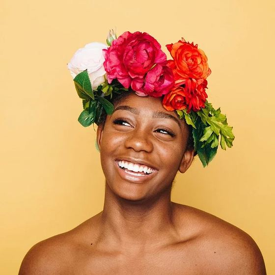
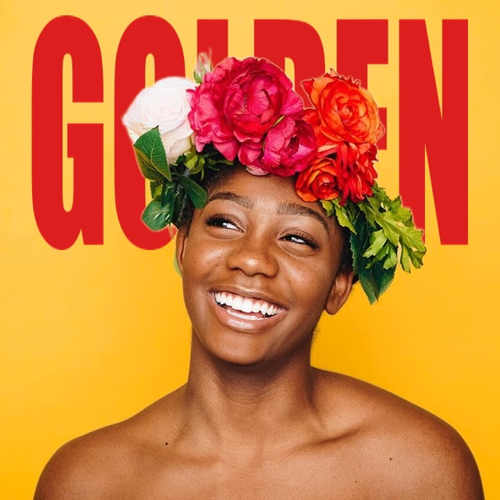

F/01 · Private
On-device
Runs on your own computer. Your photos stay put.
Offline image lab · runs on your machine
A photo studio that never leaves your computer. Pick a look, drop a photo, and get back a finished edit — film grades, neon titles, doodled frames, AI upscales. No cloud. No accounts. No uploads. Clone it and run it on your machine.
F/01 · Private
Runs on your own computer. Your photos stay put.
F/02 · Library
Film stocks, neon, comics, graffiti, sketchbooks.
F/03 · Neural
Real-ESRGAN lifts photos to Full HD or 4K, locally.
F/04 · Neural
U²-Net finds the person so effects wrap around them.
F/05 · Type
Add your own words in bundled display fonts.
F/06 · Art
Doodles, frames and murals drawn around the subject.
F/07 · Input
JPEG, PNG, WEBP, TIFF, HEIC — full-frame resolution.
02 · How it works
Browse the gallery and hover — or press and hold — to see the photo before the edit. Search by name or mood.
Upload unlocks once a preset is picked. Some looks ask for a line of text: a title, a name, a date.
Your machine runs the recipe and returns a full-resolution file. Download it, and popular looks rise to the top.


$ git clone https://github.com/ninadrathod/local-studio.git
$ cd local-studio
$ docker compose up -d --build
✓ studio on localhost:550003 · Inside a preset
Every preset is a recipe. On-device neural models read the photo, classic filters shape the light, and generated line-work is drawn on top — then it all collapses into one image.
Real-ESRGAN upscaling and U²-Net segmentation, shipped with the repo and run on your CPU.
Colour grades, grain, halation, bloom, warps and blurs — chained step by step.
Doodles, frames, titles and codex sketches drawn as vector layers around the subject.
04 · The archive
Film stocks, neon signs, comic panels, graffiti walls, da Vinci sketchbooks. Clone the repo, run one Docker command, and the whole gallery opens on your machine — there is no hosted version.
Preview photos are openly licensed — credits & licenses.